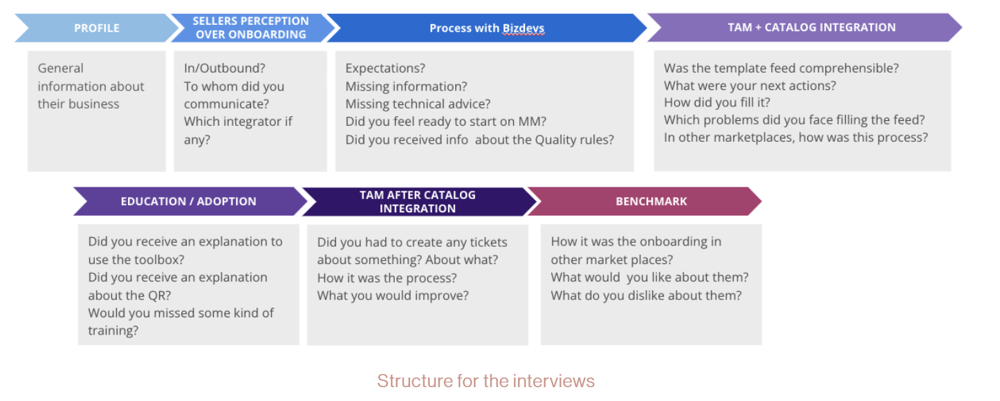

May 28 · Written By Nat.
The User Onboarding problem
The problem
I worked as a User researcher for an E-commerce related to DIY.
We onboarded all kinds of sellers. Sellers needed to integrate
their already existing catalogue, or create a new one with us.
Wait for it, are you seated? There we go: Tickets related to the
onboarding were more than 40%, users with no digital maturity didn’t
understand our requirements and represented a huge cost for us, both
account managers and technical account managers were spending time on
repetitive and not so valuable tasks.
We needed to solve this situation, and for that we need to have an
understanding of the Onboarding experience on the merchant side,
but also on the Technical account managers and the Account Managers side,
in order to identify the root cause of the problem amb make a proposition
of how the Perfect Merchant Onboarding should be.
The plan
- Identify who are the sellers who struggle the most with the onboarding.
- Identify what makes a seller onboarding excellent.
- Understand and map today’s process to onboard all kinds of sellers.
- Understand sellers needs during the onboarding process.
- Map all the pain points from sellers, and all the agents involved.
- Understand how other marketplaces operate the seller onboarding.
- Propose a solution based on the research.
The method
Shadowing sessions
- Integration of the catalogue of a seller, with the Technical assistance team.
- Pitching of the Account managers team to the new sellers.
Qualitative methods
- Sellers onboarded recently.
- Sellers that rated -2 stars on the onboarding process.
- Sellers that rated +4 stars on the onboarding process.
- Diary Study

Workshops
- To identify the user journey from all participants (Technical account managers, account managers and Sellers)
The Learnings
We found the following insights:
- Small sellers expressed feeling left alone, no answer to their emails, no solution to their problems.
- Too many sellers onboarded, not enough account managers to help them properly, no content or tools to make them self sufficient.
- Lots of sellers have been onboarded without knowing about the quality rules, and our services.
- Sellers don’t understand how to use the feed correctly (we are not clear).
- The error report it’s not actionable.
- Sellers report a great onboarding only when the account manager did manage personally all the parts of their onboarding.
- There is a lack of content for seller’s to manage on their own.
- A huge number of repetitive and manual task done by Account Managers and Technical Account Managers makes the process very slow
and full of human mistakes. (+45 minutes detected that could be done automatically)
- Miscommunication between AM and TAM, no visibility and no understanding of each other actions/decisions, impacting the seller.